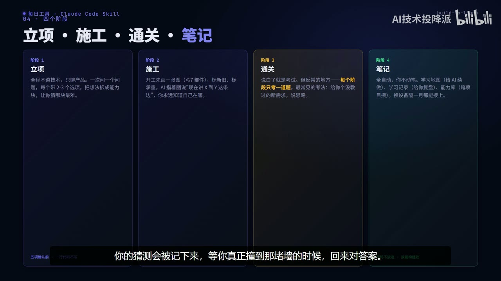

原视频 · 在线回看
点击后联网加载 B 站播放器；本地不下载整段视频。

原视频 · 在线回看
点击后联网加载 B 站播放器；本地不下载整段视频。
来源：build-to-learn｜AI 写完代码你却啥也没学到？vibe coding 时代的“幻觉式掌握”怎么治｜UP 主：AI技术投降派｜时长：14 分 49 秒｜打开视频｜阅读强度：深度
你让 AI 帮忙写一个网页，看着它创建文件、解释代码、修复报错，最后按下运行按钮，页面真的出现了。每一步好像都看懂了，也能跟着点头。可是过一会儿，想自己改动其中一部分，却发现不知道该从哪个文件开始。东西确实做出来了，自己对它的理解却没有跟着长出来。
这种落差很容易被成功的结果遮住。请别人代写时，我们通常知道实现过程由对方负责；与 AI 一起做时，我们全程参与对话，选择过方案，也确认过很多步骤，于是更容易觉得自己已经掌握了。build-to-learn 关心的就是这个问题：怎样把做项目的过程组织成一次真正的学习，让最终产物同时帮助我们检验理解。
build-to-learn 以一套 Claude Code 技能规则的形式组织学习。这里的技能可以理解为提供给 AI 的工作说明，约定它什么时候解释、什么时候实现、什么时候等待学习者操作。它改变的是 AI 带人做项目的方式，不能凭一个技能名称就保证每个人获得相同学习效果。这里讨论的是这套规则所提出的学习安排。
如果目标只是尽快拿到一个能用的工具，把实现交给 AI 可能已经符合需求。但如果目标包括理解技术，那么交付程序和检查学习就必须同时发生。程序能运行，只能说明某些功能在当前条件下实现了；我们能否解释它为什么运行、条件变化后会怎样，仍然需要另外了解。把这两个目标说清楚，就能够避免完成一项以后，误以为另一项也自动完成。
这套安排把学习者称为“委托人”：代码可以由 AI 编写，学习者负责提出需求、理解方案、观察结果和验收。装修房子是一个容易进入的类比。业主未必亲自砌墙、布线，但需要知道自己要求的空间怎样被实现，哪些现象说明施工存在问题。类比帮助我们理解责任分工，真正进入技术学习后，仍要回到具体部件和真实名称。
第一项是可行性。准备做一个产品时，先了解现有技术能支持什么、哪些目标受到限制。假如连某种能力已经存在都不知道，想法可能过早停住；反过来，如果把不可靠的能力当成随时可用，项目又可能建立在错误前提上。了解可行性，帮助我们决定哪些部分可以直接尝试，哪些部分需要先做小范围验证。
第二项是机制，也就是一件事怎样经过几个环节成为结果。一个按钮按下以后，数据去了哪里，哪个程序处理了它，结果又怎样回到页面。我们无需在起步时掌握全部实现细节，但要能顺着基本过程走一遍。否则，AI 给出一个方案时，我们只能看措辞是否流畅，很难判断其中有没有漏掉关键步骤。
第三项是边界。一个功能可能在示例数据上运行正常，条件改变之后却出现问题。理解边界，就是知道它依赖哪些前提，以及什么情况下容易失败。第四项是验收：AI 说完成以后，我们看什么、操作什么，才能知道需求确实得到满足。边界让我们想到该试哪些情况，验收则把这些判断落实到可以观察的结果上。
| 要建立的判断 | 它回答的问题 | 缺少这一项时容易发生什么 |
|---|---|---|
| 可行性 | 有哪些技术能帮助完成目标？ | 不敢尝试已有能力，或对未知能力作过高承诺。 |
| 机制 | 从输入到结果，实际经过什么？ | 只能接受方案描述，难以发现其中跳过的环节。 |
| 边界 | 哪些条件改变后，功能可能出错？ | 只看到一次成功，就以为任何情况下都可靠。 |
| 验收 | 怎样观察和测试，确认任务完成？ | 把 AI 的“已完成”当成唯一判断依据。 |
这四项关注点不意味着语法、接口和调试从此没有价值。它们给出了这套学习安排的优先顺序：先建立足以判断项目的理解，再按实际困难继续深入。做不同技术工作需要的深度仍然不同，能委托完成一个小项目，与能够独立维护复杂系统，也不能用同一把尺子衡量。
学习深度因此可以用三个具体问题观察：看到方案时，能否说出它为什么可靠或哪里值得怀疑；出现故障时，能否把问题定位到大致环节；宣布完成时，能否设计合适的检查。回答得上来，说明当前项目中的理解已经有了一定支撑。换到不同场景之后能否继续作出判断，还需要新的实践。
整个学习过程从立项开始。AI 先与学习者讨论产品：给谁使用，在什么情况下使用，遇到没有网络之类的情况希望怎样处理。每次只问一个问题，并提供少量具体选项，帮助一个尚不熟悉技术的人表达需求。此时，如果过早讨论框架和实现细节，可能会把真正的使用问题挤到后面。
接下来，把想法拆成几块能力，用容易理解的语言命名，并区分当前已经具备的能力、可以借助的现成技术、明显限制和仍不确定的部分。学习者还会先猜一猜哪一块最难。这个猜测会留下来，等实际做过之后再比较。猜错不需要被当成失败，它让人看见自己的直觉为什么改变，以及原先忽略了什么条件。
立项结束前，需要确认产品的一句话描述、使用场景、完成标准、学习深度，以及第一阶段准备做什么。只有这些意思已经理解一致，才进入实现。它的价值在于把“做成什么”和“学到什么”提前放到桌面上。后面即使出现一个很漂亮的结果，也可以回到起点检查，这是否真的符合最初需要。
每个实现阶段开始时，AI 先画一张结构图。图里只放少量主要部件，规则把上限设为七个，并标出哪些来自上一阶段、哪些是这次新增的。箭头则说明数据怎样流动。这个数量是控制当前讲解复杂程度的设计选择，不必把七当成所有项目都必须遵守的认知定律。
图画出来之后，讲解就能沿着具体连接展开。例如正在解释从一个部件到另一个部件的过程时，学习者可以看到起点、终点，以及它们在整体中的位置。代码当然还会有细节，但这些细节有了可以放置的地方。遇到报错时，也更容易先问属于哪一段过程，再逐渐检查内部实现。
这种方式还让项目逐步增长的过程更清楚。如果新阶段只增加一两个部件，我们就能够把已经理解的部分与新的部分连接起来。读者无需每次重新面对一整个陌生系统。结构图持续充当学习地图，具体运行现象则帮助我们检验图里的关系是否真的发生。
build-to-learn 提出“应答预算”，指学习者在一个阶段里愿意认真停下来回答问题的次数有限。AI 如果每解释一个小步骤都问“你理解了吗”，前几次可能促进思考，后面却容易变成机械确认。对话看起来很积极，真实理解却未必继续增加，甚至连重要的问题也开始随手应付。
因此，这套规则把正式的学习检验集中在每阶段的通关题上，施工过程中更多采用直接解释、给出问题后同时解释答案，或者邀请学习者亲自操作。立项仍然需要确认产品选择，实际操作仍然需要反馈，所以“一个阶段一题”限制的是正式考试密度，并不意味着整个过程只发生一次交流。
通关题的重点是判断，往往会给出一个没有原样教过的新需求，要求学习者说明思路。如果只记住刚才答案的句子，就容易在条件变化后卡住；如果理解部件的职责与限制，就有机会把已有知识迁移过去。一道经过选择的问题，可以比反复确认“懂了吗”更接近真实掌握，不过它仍然只是当前阶段的检查，不能保证以后永远不会忘记。
运行命令、点击按钮、观察结果这些动作仍然交给学习者。AI 可以先准备好环境，告诉我们操作哪里，然后等待实际反馈。我们做完，再描述看到了什么，AI 接着解释现象与机制的关系。这个停顿把学习者重新放回项目中，使自己有机会把文字中的过程与屏幕上的结果联系起来。
习惯了让 AI 一口气做完所有事情的人，可能把这种等待误认为程序卡住。理解这套学习安排后，就知道暂停有时是交接操作的信号。区别在于，学习者此时究竟需要做一个明确动作，还是系统真的遇到了故障；好的引导应当把等待的原因和下一步说清楚，避免让人自己猜测。
有些练习还会故意设置会失败的条件，让我们先看到问题，再理解为什么失败。这里值得保留的是可控试验：预期会发生什么、实际发生什么，两者之间的差别值得观察。它应当发生在能够承受失败的练习环境里，不能为了教学去破坏真实数据。亲自遇到一次边界，可能帮助记忆，但也需要后续解释把现象与原因接起来。
这套规则对比喻比较克制。新概念第一次出现时，可以借一个熟悉情境帮助进入；继续学习和保存笔记时，就回到真实技术名称。举例说，用柜台工作的方式帮助理解事件循环，可能让人暂时有印象。但如果后面一直只说“柜台”，再看文档里的“事件循环”时，就未必能与此前学到的内容对应。类比与概念之间的连接需要及时建立。
未来计划也保持一定弹性。靠近当前的阶段要具体，因为马上要做；更远的部分可以先写得简略，等实际遇到需求和困难后再展开。学习者在过程中可能发现，原先以为容易的地方需要补基础，原先计划深入的内容暂时没有用处。让计划随这些信息调整，有助于把学习与实际理解保持联系。
自动保存的记录分成三种。学习地图帮助 AI 或后续对话了解当前进度；学习记录面向学习者，保存图解、解释和自测问题；能力库则把跨项目可以复用的理解积累下来。三者面对的使用场景不同：一个负责续接，一个负责回看，一个负责下一次项目中的迁移。实际能否在其他设备或新对话里接上，仍取决于这些文件是否被带过去并正确读取。
如果只是赶着完成一项交付，教学流程可能反而占用时间。build-to-learn 允许学习者明确要求直接完成任务，退出学习安排。这个选择很重要：当下目标可以改变，工具不需要把每一次使用都强行变成课程。只要知道自己选择的是交付效率，就不会把减少的学习过程误算成已经获得的能力。
在介绍时，这还是一个规模较小的项目，已有规则的细致程度，不能代替对大规模学习效果的验证。它以 Claude Code 技能形式提供，转到其他工具时，规则是否能够同样执行，也需要实际适配与检查。因此，可以认真理解它提出的交互设计，同时保留对具体效果的判断空间。
更深一层的问题，是判断力怎样形成。代码主要由 AI 编写时，学习者仍需要足够的操作、观察和修正，才可能逐渐认识技术边界。只听解释、偶尔答一道题，未必足以支持复杂场景。build-to-learn 尝试用分阶段结构、实际操作和迁移问题来弥补这个缺口，但它能够帮助不同基础的人学到多深，仍需要更多实践来回答。
回到最初那个已经运行起来的网页，我们可以再多看一层：它给了我们一个可以观察的对象。知道这个对象由什么组成，能解释一次输入怎样走到结果，知道哪里可能出错，也知道怎样检查，才说明理解正在形成。AI 可以帮忙缩短实现过程，学习者仍需要亲自经历这些理解发生的时刻。
项目运行成功与自己已经掌握，是需要分别判断的两件事。build-to-learn 把可行性、机制、边界和验收作为重要学习方向。
立项先明确目标，施工用结构图连接部件，通关检查迁移理解，笔记保存进度和可复用知识。减少连续考试，可以把注意力留给实际操作和关键问题。
这是一套值得理解的学习安排，效果仍取决于实践。判断力需要观察、尝试与修正，不能仅靠看过 AI 的解释来替代。
AI 写出的网页能够运行，你还需要了解哪些东西，才能独立判断一次修改是否合理？
为什么连续追问“懂了吗”可能使重要的检查失效？减少问答之后，哪些操作仍然应该由学习者亲自完成？
如果某个概念只记得一个生动比喻，回到实际文档时可能遇到什么困难？